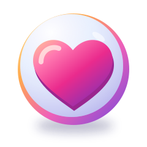

SAÚDE E DESENVOLVIMENTO
Cuidado multidisciplinar
Diferentes áreas do conhecimento para valorizar cada caminho de desenvolvimento.
Conheça a propostaO Instituto Mais Amor conecta acolhimento, saúde, educação, assistência social e defesa de direitos para fortalecer a inclusão, a autonomia e os vínculos familiares.
Com atenção às pessoas com síndrome de Down, pessoas autistas e com outras deficiências, nossa rede também se volta às mães atípicas, cuidadores e famílias em situação de vulnerabilidade. Conte sua necessidade e conheça os caminhos de cuidado e apoio que podemos construir juntos.
As finalidades do Instituto incluem fonoaudiologia, terapia ocupacional, fisioterapia, psicologia e psicopedagogia; apoio às famílias e fortalecimento de vínculos; inclusão na educação, na cultura, no esporte, no lazer e no trabalho; oficinas, formação e orientação sobre direitos. As ações de solidariedade também podem incluir apoio alimentar. Cada iniciativa depende de equipe, estrutura e disponibilidade confirmadas.
Conhecer as áreas de atuação ↗Atendimentos, terapias e apoios dependem de disponibilidade e avaliação da equipe.
O cuidado começa
com um encontro.
O direito de ser.A alegria de pertencer.

Cenas ilustrativas de banco de imagens. Não são registros do Instituto. Créditos e descrição do vídeo
Saúde, educação, assistência social e defesa de direitos conectadas para construir uma rede de cuidado, oportunidades e pertencimento.

Imagem ilustrativa fornecida pelo Instituto e gerada com inteligência artificial. Não representa uma atividade real.
O Instituto Mais Amor nasce da convicção de que todas as pessoas merecem respeito, oportunidades e condições para desenvolver suas capacidades.
Nossa proposta integra saúde, educação, assistência social e iniciativas de inclusão, valorizando o apoio às famílias e a defesa dos direitos das pessoas com deficiência e neurodivergentes.
Conheça nossa missão e nossos valores
Imagem ilustrativa criada com inteligência artificial. Não representa uma atividade real do Instituto.
As áreas apresentadas fazem parte das finalidades institucionais. A disponibilidade de serviços depende de confirmação.
Diferentes áreas do conhecimento para valorizar cada caminho de desenvolvimento.
Conheça a propostaAutonomia, participação, fortalecimento familiar e defesa de direitos.
Conheça a propostaAprendizagem, formação e conhecimento para ampliar possibilidades.
Conheça a propostaAs cenas de atividades e acolhimento são ilustrações geradas com inteligência artificial, fornecidas pelo Instituto. Contexto das imagens ↗
 01
01Canal de acolhimento e comunicação pensado para aproximar famílias do Instituto.
Conheça a proposta 02
02Iniciativa de acolhimento e fortalecimento de mães atípicas.
Conheça a proposta 03
03Iniciativa dedicada à inclusão de crianças com deficiência, incluindo crianças com síndrome de Down.
Conheça a propostaConheça a situação de cada projeto e consulte a equipe sobre as formas de participação.
As finalidades estatutárias estabelecem o compromisso com atividades, atendimentos e terapias gratuitos, contínuos e sem discriminação.
Leia as finalidades institucionaisO compromisso do Instituto é construir ações, atividades e possibilidades de cuidado com acesso gratuito, conforme suas finalidades institucionais. Isso significa que a condição financeira de uma família não deve ser tratada como medida do valor de uma pessoa ou do seu direito ao acolhimento. As iniciativas ainda dependem de estrutura, equipe, planejamento e confirmação de disponibilidade. A gratuidade não representa garantia de vaga, agendamento ou atendimento imediato; cada possibilidade será comunicada com clareza pelos canais institucionais.
Igualdade é reconhecer que todas as pessoas têm o mesmo valor e merecem respeito e oportunidades de participação. Na prática, isso envolve acolher diferentes origens, identidades, condições sociais e necessidades de apoio, sem discriminação. Também exige equidade: oferecer recursos e adaptações de acordo com as barreiras enfrentadas por cada pessoa. A proposta do Instituto é construir relações de escuta e respeito, com informações claras e critérios transparentes para as iniciativas que forem disponibilizadas.
Dignidade é reconhecer cada pessoa como sujeito de direitos, com história, preferências, capacidades e projetos de vida próprios. O cuidado deve preservar a autonomia, a privacidade e a participação nas decisões que afetam a própria vida. Isso significa usar linguagem respeitosa, evitar exposição indevida e ouvir a pessoa e sua família sem reduzir ninguém a uma condição, diagnóstico ou dificuldade. O compromisso do Instituto é valorizar potencialidades e construir relações de cuidado com respeito e responsabilidade.
Uma proposta de canal de aproximação para acolher o primeiro contato, ouvir necessidades e orientar sobre possibilidades conforme a estrutura disponível.
Conheça o acolhimentoO primeiro contato começa com a sua necessidade.
Acolhimento humano, conforme a estrutura disponível.
Informações e eventuais orientações para os próximos passos.
Atendimento multidisciplinar, desenvolvimento e reabilitação.
Seu tempo, seu conhecimento e seu compromisso podem contribuir para uma sociedade com mais inclusão.
O Instituto Mais Amor é um projeto de finalidade social voltado ao cuidado, à inclusão, ao desenvolvimento humano, à assistência social e à defesa de direitos.
Suas finalidades contemplam pessoas com deficiência, pessoas neurodivergentes, famílias e pessoas em situação de vulnerabilidade social, conforme os programas e critérios de atendimento que forem implementados.
A gratuidade dos atendimentos e atividades é um compromisso previsto nas finalidades estatutárias do Instituto. A disponibilidade de cada serviço deve ser consultada nos canais oficiais.
Fonoaudiologia, Terapia Ocupacional, Fisioterapia, Psicologia e Psicopedagogia.
Por meio do canal oficial de contato, quando disponibilizado.
Manifestando interesse em voluntariado, colaboração ou parceria institucional por meio dos canais oficiais.
O Instituto prevê, entre suas finalidades, articulação com órgãos públicos e entidades privadas. Eventuais parcerias formalizadas serão divulgadas oficialmente.
Consulte os cadastros, acompanhe as solicitações e organize os contatos do Instituto.
Área exclusiva para a administração. Entre com sua conta autorizada do ChatGPT.